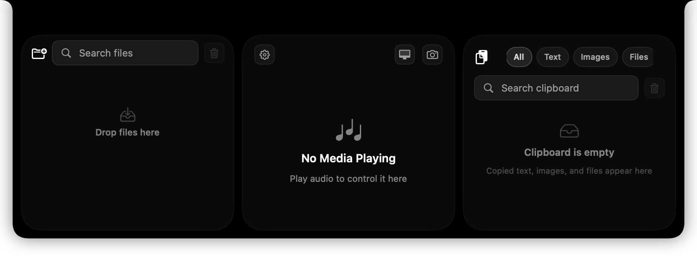
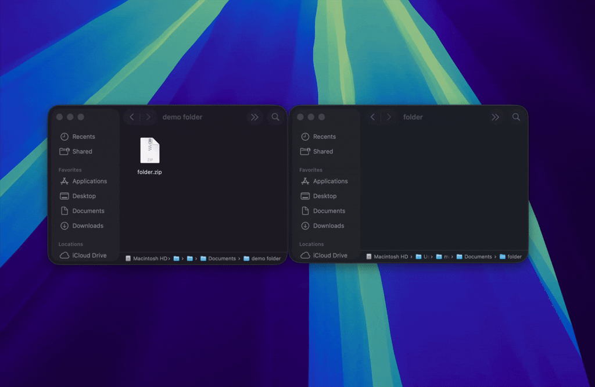
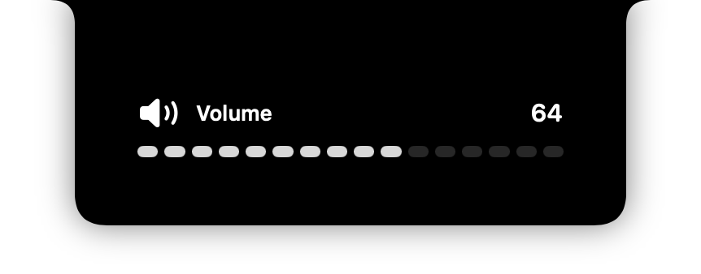
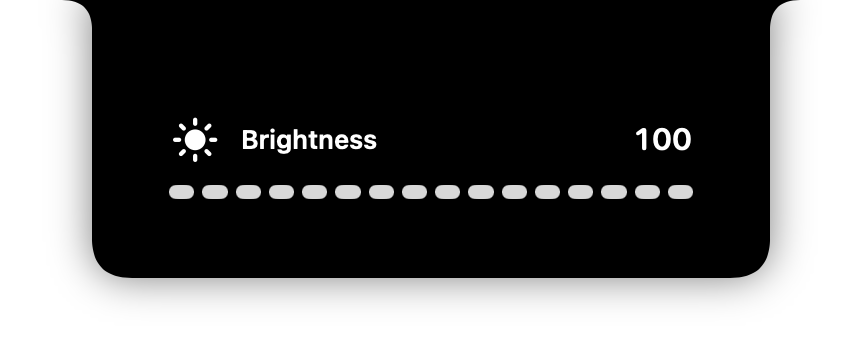
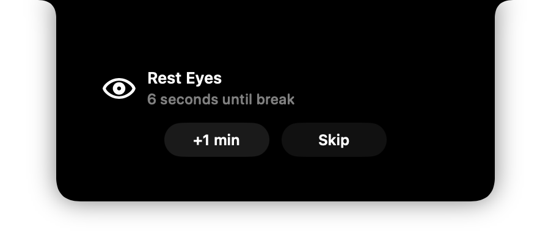

Clipboard history
Find copied text, images, and files. Pin important items, paste without formatting, preview content, and extract text from images with OCR.
Native macOS utility · Free and open source
More useful Mac. Fewer tiny apps.
Turn the space around your notch into a file shelf, clipboard, and media controller, then add the small background tools macOS is missing.

One appfor everyday Mac utilities
Native Swiftbuilt for macOS
Open sourceinspect it, improve it, own it
Your choiceenable only the tools you want
One utility, many annoyances solved
NotchMore is useful on Macs with or without a physical notch. Every feature is optional, so the app stays as focused as you want it to be.
Find copied text, images, and files. Pin important items, paste without formatting, preview content, and extract text from images with OCR.
Keep files close while you work. Drag them back out, select multiple items, copy paths, share, or send through AirDrop and LocalSend.
See artwork and playback details, scrub through media, adjust volume, and control playback without leaving your current window.
Move between windows with live previews, plus get Windows-style previews when hovering over open apps in the Dock.
Bring volume, brightness, battery state, and rest reminders into a compact HUD that expands naturally from the notch.
Cut and paste Finder files, separate mouse and trackpad scrolling, remove Caps Lock delay, add three-finger middle click, hide desktop icons, and use your camera as a quick mirror.
Made for your Mac
The same tools adapt to your display instead of locking useful features behind a particular MacBook model.
Small actions, shorter workflows
Keep files moving, inspect open windows, and bring familiar file controls to Finder without interrupting what you are doing.

System feedback, in the right place
Volume, brightness, battery state, and rest reminders appear in a focused surface without making the main panel jump between states.



Built to be yours
First-run onboarding lets you enable only the features you want and walks you through required permissions.
NotchMore is a local macOS utility. Its source is public, so you can see how the tools you depend on work.
No subscription, account, or feature tier. Download the signed app or build it yourself from the repository.
Before you install
NotchMore requires macOS 15.4 or later. Features that monitor global input or show live window previews need the matching macOS privacy permissions.
Start with the features you need. Leave the rest switched off.